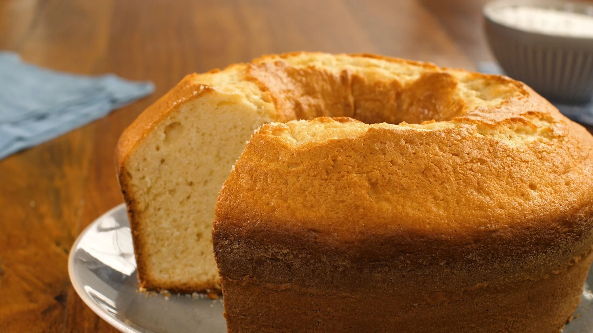

Voltar ao menu Principal
Bolo de Cenoura Fofinho

Ingredientes:
- 2 xícaras (chá) de cenoura picada
- 4 ovos
- 2 xícaras (chá) de açúcar
- 2 xícaras (chá) de farinha de trigo
- 1 xícara (chá) de óleo
- 1 colher (café) de fermento de pó
Cobertura:
- 1 lata de leite condensado
- 1 caixinha de creme de leite
- 1 colher cheia de margarina
- 3 colheres cheias de chocolate em pó
Modo de Preparo
- Separe as claras das gemas
- Bata as claras em neve e reserve
- No liquidificador coloque a cenoura, o óleo e as gemas e bata por 5 minutos
- Em uma tigilea mistura a farinha de trigo, o fermento e o açúcar, misture bem
- Depois junte os ingredientes batidos, miture bem, por ultimo junte as claras em neve
- Em uma assadeira untada leve para assar em forno medio, pre-aquecido, por aproximadamente 40 minutos ou até que fure com um palito e ele saia limpo
Cobertura:
Leve todos os ingredientes ao fogo e mexa até que desgrude da panela.
Fonte:
https://www.tudogostoso.com.br/receita/5361-bolo-de-cenoura-fofinho.html